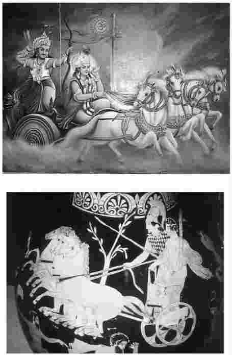

对于印度哲学典籍，一般来说我们对其作者的了解都不多。如果我们知道这些典籍的作者的名字、他们生活的地域，如果我们能把他们在世的年代范围精确到五十年之内，这便是获得了学术上的一种成功。但是就《弥兰陀王问经》 [1] 一书而言，学术领域还没有获得这样的“成功”——对其中提出的问题，我们几乎一无所知。书中，一个名叫那先的比丘与一位侯王辩论并且回答侯王的问题。那先可能是个真实的人物，不过后来被传奇化了。而弥兰陀王（Milinda）一般被认为就是米南德（Menander），自亚历山大大帝征服印度之后印度西北部历任希腊统治者之一。但是即使这些也只是人们的猜想——既然如此，还是让我们直接来看这部典籍吧。
略看几行，我们就会大吃一惊。我们知道，柏拉图《格黎东篇》中几乎所有的构成元素在大部分读者看来都是相当熟悉的。休谟在《论奇迹》中着眼于从日常生活中关于证据的观察结果，以及对奇迹的一个并不让人感到吃惊的定义出发，提出观点，最后得出一个非同寻常的结论，并且表明得出这个结论是必然的结果。但是作者们有时会采用不同的策略，提出一个坦率地说似乎很荒谬的主张，将我们直接扔到了深刻的一端 [2] 。我们要学会坦然处之，继续往下读，并尽力找出这个荒谬的主张到底意味着什么（也许它的真实意思就写在字面，也许它不过是用一种非常的方法来言说某件不那么令人惊讶的事情），哲学家们为什么要提出这个主张。注意“哲学家们为什么要提出这个主张”包含两层意思，两层意思都很重要：一是他们认为这个主张正确的原因，二是他们对这个主张感兴趣的目的，即他们想要得到什么。所有这些都与我们下面将要探讨的这段内容密切相关。
首先来看让我们吃惊的事情。两人聚集在一起，王问那先的名字，那先告诉他：“陛下，人们叫我那先。”但是他随后又加了一句说“那先”一词只是“一个名字而已，因为并不能找到这样一个人”。他的话是什么意思呢？你可能会认为那先是某个人，这个人刚刚告诉弥兰陀王自己的名字，但是马上你又发现这个名字不是一个人名。所以那先终究不是一个人，即使他刚刚才告诉王自己叫什么名字，其他僧人是怎么称呼自己的。这里面到底是怎么回事呢？
王显然是精于此类讨论（而且也精通佛法）的，他并不灰心，而是继续深入问题的核心。他认识到那先并不仅仅是在说他自己，而是希望自己提出的观点（无论这个观点是什么）同样适用于其他所有人，所以王开始从那先的观点中推演他认为是荒谬的结果。如果那先所说的是对的，那就没有人曾经做过任何事情，不管是好事还是坏事；也没有人曾经取得过成功，遭受过任何痛苦。也没有谋杀这类事，因为根本没有人死去。然后，王又就那先的身份开了个小小的玩笑：没有人给那先讲过经，也没有人授予那先比丘的称号。这种策略在所有的辩论中都是常用的：这里有许多事情是我们大家都会毫不犹豫地认为是正确的，那么那先是在说这些事都是错的吗？或者他打算告诉我们，如果我们正确理解他的观点就不会得出这样的结果了？那先从未正面回应过这个挑战。到这章的结尾他给了一个暗示，从中我们可以想象出如果那先当时正面回应的话，他会说些什么。但是这时王继续说话了，使用问答的形式，如同柏拉图的许多对话。
弥兰陀王在这段中的提问是建构在佛教“五蕴”教义之上的。“五蕴”认为人是由五大元素构成的复杂体。弥兰陀王称这五大元素为物质形式、感觉（通过感觉这些元素似乎明白了什么是快乐、什么是痛苦、什么是漠然）、感知、精神构成（即我们的脾气和性格）以及意识。这五种元素到底是什么我们无须费神，只要大概理解就行了：关键是人 不能等同于其中任何一种元素。
只要稍作思考，我们大部分人可能都会这么说。我们就是我们的感觉吗？不，我们是拥有那些感觉的人，而不是感觉本身。我们是我们的感知吗？也不是，原因同上。我们是我们的脾气性格吗？当然也不是，因为脾气和性格是以某种方式行事的倾向，我们不是那些倾向本身而是具有 这些倾向的人。同样，我们也不是意识，什么 是有意识的，我们就是什么 。不过，其中第五种元素（弥兰陀王其实是把这种元素排在第一位的）也许会更有争议。物质元素，即身体，难道就不可能是那个拥有意识、脾气、感知和感觉的东西？实际上，当那先被问到是否那具躯体就是那先时，为什么他很快就说不是呢？
如果有人提出一个似乎显而易见的观点，这个观点对你来说又好像根本不是显而易见的，那么寻找其背后深藏的未被说出的东西就不失为一个好策略。也许他们假设一个自我，即一个人必须是某种纯洁崇高的东西——注意王在提问之前不遗余力地描述了身体的令人厌恶之处。也许他们假设自我与身体不同，自我必须是永恒不变的东西，甚至还能够超越死亡。这两种假设要么源自之前的哲学或宗教概念——我马上还会谈到这一点，要么源自下列观点：物质本身并不运动（只是将自身的一部分留在周围，看自己移动了多少），而动物是运动的——因此其内部肯定有某种非物质的东西使其物质部分运动；或者，即使物质本身是运动的，但是它无法连贯地运动，它的运动没有方向性，也不能随机应变——因此身体需要有某种东西来指引自己。
这些观点早在《弥兰陀王问经》问世之前就司空见惯。还记得苏格拉底在《格黎东篇》中强调灵魂纯洁的重要性，或者再读柏拉图关于苏格拉底最后一次对话和苏格拉底之死的《裴洞篇》，也就是《格黎东篇》后面的一篇。“停一停，”也许你会喊道，“那是希腊，我们这里谈的是印度。”没错，但是在印度教神圣的婆罗门典籍中（甚至更早）就能发现非常相近的观点。我们承认，佛教曾有意识地摆脱婆罗门教的传统。两者的分歧主要在于动物牺牲和种姓制度（这两点以及其他所有极端的禁欲方式，佛教都已摒弃），但是婆罗门教的许多其他传统观点都保留了下来，并成为佛教出现的基础。轮回转世遭受苦难的说法以及摆脱轮回获得解脱（佛教的涅槃和印度教的解脱）的希望同时是两种宗教思想的组成部分。
知道这些也许有助于我们理解为什么那先比丘在面对那一连串问题时马上就回答“不，陛下”，但是帮助并不像我们希望的那么大，因为这些并没有提示我们为什么那先对王的最后一个问题进行了否定的回答，即那先是否是其他东西，一种与五“蕴”不同的东西。如果那先是其他任何东西，我们会希望他回答“是的，那先是与五蕴不同的东西，这种东西可以脱离躯体，然后进入另一个躯体居住，这种东西在现世有一定的感觉和感知，进入来世感觉和感知则相当不同”。但是他的回答还是“不，陛下”——那先不是 其他东西。因此谜还是没解开。弥兰陀王接下来的回答也同样让人感到困惑：他谴责那先所说的是错误的，因为显然“并不存在那先”。但是那先从未说过存在那先——恰恰相反，是那先自己的那句让人感到困惑的“并不存 在 一个叫‘那先’的人”使这场讨论得以展开。
你有时肯定也会遇到像这样的如同交通堵塞一般的困境，但是只有拙劣的向导才会试图掩盖事实。到这个阶段，我们的阅读需要一些创新性。比如：我们是该认为王就是被搞糊涂了，才对对方所说的话不理解，还是该认为王就是无法相信不存在这样一个人，因而认为那先肯定至少会用“是”来回答自己一连串问题中的一个？既然对所有的问题那先给出的答案都是“不是”，那么其中至少有一个答案是错误的，这就是当王说“您，尊敬的长老……所说的是错误的”时，所指的“错误”吗？这两种观点（也许你能想到另一种）我偏向第二种，因为第二种与你阅读整章时的感觉更吻合。这章中，弥兰陀王对自我的本质的看法被认为是错误的，而那先则纠正了他的看法。
那先纠正王的看法同样是通过向他提出一系列关于战车的问题（之前，那先先简短地拿弥兰陀王奢侈的生活方式打趣儿）。印度传统中经常使用明喻、比较和类比。在遭遇疑难问题时，如果听者开始把这个问题看作与自己熟悉的其他事情类似，或同属一种类型，那么他就会感到更加自如。这里值得期待的是：一旦王都用“不”来回答所有关于战车的问题，那么他也就会明白为什么那先用同样的方式来回答他提出的关于人的问题。
到这章的结尾，王的确明白了。然而还是让我先来谈谈一些只研究这个文本无法揭示，但却肯定会对像弥兰陀王一样具有学识和智慧的人产生影响的东西。那先把战车与人相提并论，让人清晰地想起在两人共同的哲学背景中大家都很熟悉的一个暗喻，但是与此同时，那先的比较又与这个暗喻惊人地不同。
柏拉图曾经把自我比作战车，这点众所周知。早在柏拉图之前，印度哲学传统中的《卡达奥义书》也作过同样的比较（见参考书目）。现在轮到那先了吗？并不完全是。似乎作者 [3] 是在影射这种传统，从而正好突出自己的反对意见。柏拉图书中写到一个战车手在努力驾驭一匹温顺的马（理性）和一匹不羁的马（欲望），而《卡达奥义书》则将自我比作乘坐战车的人，将智力比作指引感觉的车手，并将感觉比作马。那先没有提到马，更重要的是他没有提到战车手，更没有提到与其有所区别的乘车人。那正是那先反对的画面。没有永恒的存在，即没有自我来指引方向或是进行监督。作者使用战车这个神圣的比喻，但是用法与前人有所不同：他是在将自己的观点传递给自己所处的文化圈，同时又向其表明自己所反对的东西。
因此那先比丘使用完全一样的方法询问王：“车轴是战车吗？——轮子是战车吗？……”弥兰陀王的回答都是“不”。这并不令人吃惊。那先为王的问题给出的答案也并不让人感到吃惊，但是最后一个问题除外。同样，弥兰陀王其中的一个回答也让几乎所有读者都感到吃惊。不过这次不是最后一个问题，而是倒数第二个问题。那先问那么战车“是不是旗杆、车轴、轮子……缰绳和刺棒的总和”。大部分人都会说“是的；只要我们所指的不是散落成一堆的零件，而是正常拼装组合好的 ，那就是一辆战车”。但是弥兰陀王还是回答“不，尊敬的长老”。

图6、图7战车的形象。在印度宏大的叙事诗《摩诃婆罗多》非常有名的一个场景中，阿周那乘坐黑天女神克里希娜驾驭的战车。克里希娜不仅是他的车夫，同时还是他在道德方面的指引者。希腊神话中英雄赫拉克勒斯手持缰绳，雅典娜女神在一旁守护着他。
我们很快就能发现这个相当奇怪的回答之后隐藏的东西。现在还是让我们注意一点：王在用“不”回答了所有的问题之后，已经把自己置于一个与那先刚才所处的一样的情境之下。那先马上以其人之道还治其人之身，用弥兰陀王先前问自己的话进行反问：“那么你所说的你乘坐来这儿的战车在哪儿呢？陛下，您所说的是错误的……”——那先赢得了一阵掌声，即使是弥兰陀王的支持者也为他鼓掌。但是王并不服输。那并没有错，他说，因为“正是有了旗杆、车轴……和刺棒，‘战车’才能存在，但是只是作为名称而存在”。正好一样，那先回答说，“那先”也只是作为名称而存在，因为五“蕴”都在。随后他又引用比丘尼金刚的话：
国王为之折服。这章就在愉快的气氛中结束了。但是两人到底在哪些方面达成了共识呢（你也许会问）？是关于“战车”“自我”“人”“存在”以及“那先”是约定俗成的术语吗？那么难道不是所有的 词语都是约定俗成的吗——同样表示“奶牛”的意思，不管当地的习惯如何，英语是用cow，法语用vache，波兰语用krowa？还是他们要告诉我们的肯定远不止这些？
的确远不止这些。他们要告诉我们的不是关于语言的约定俗成性，而是关于整体及其组成部分；重要的是从某种意义来说，与构成整体的部分相比，整体不那么真实，不那么客观，反而更像是一种常规性的东西。首先，部分在某种意义上可以独立存在，而整体不行：没有战车时车轴可以存在，但是没有车轴就不存在战车。［正如德国哲学家戈特弗里德·威廉·莱布尼茨（1646—1716）后来所说，整体拥有的只是一个“借来”的真实存在，从组成整体的各部分的真实存在那里借来。］而且，决定怎样才能构成整体的不是自然，在某种程度上持决定权的是我们以及我们的目的。如果我们将战车的旗杆和其中一个轮子移走，那么所有剩下的零件构成的集合本身并非不完整，但是就我们希望战车所起的作用而言，这个集合就变得不完整了。
那么为什么所有这些都很重要呢？为什么那先要首先发起这场对话呢？并不仅仅是为了消磨时间，我们对此大概很清楚。这一点对他很重要，因为他认为信仰能影响我们的态度，从而影响我们的行为。这当然完全合理：比如，对于那些认为“上帝”这个词代表某种真实事物的人，我们会期待他们的感觉——也许还有行为——与那些认为“上帝”只是一种约定俗成的言说方式的人不同。说得更专业一点：我们的形而上学观（我们对现实的根本看法）会影响我们的伦理观。这里，从佛教的观点来看，哲学的目的（实际上是佛教的目的）是减轻苦难；如果无法减轻苦难，哲学就毫无意义了。造成苦难的一个主要原因是过分估计自我、自我的需求以及自我的目标的重要性：“执著于自我”，正如佛教徒们所说的。因此如果信仰改变能够降低我们心目中自我的地位，那么任何这样的改变都是很有用的。某部藏文典籍中有一段话说：“相信自我是永恒的、独立的，你就会依恋自我；……这就会导致各种亵渎行为，这些亵渎行为带来恶业，而恶业则会带来恶报。”这就是为什么所有这些显得重要的原因。
那么我们是否能说在这章中，那先证明了他自己的观点？他真的证实了不存在永恒的自我，存在的不过是一个可被方便地称为人的多变的复合体吗？当然没有。即使我们接受了他和弥兰陀王所说的关于战车的所有观点，我们还是得争论只有在考虑到人的时候，这个战车的比拟才是可靠的；但是从这一点来看，那先什么也没说。因此跟其他大部分使用类比的情况一样，这个类比可以有效地说明或解释关于自我的学说的意义，但是并不能作为证据来证明这个学说是正确的。我们同样也并未从中得知为什么那先在面对王的最后一个也是非常重要的一个问题——那先是与物质形式、感觉、感知、精神构成和知觉分离的（不同的）吗？——时，给出了那个极为重要的答案（“不，陛下”）。而对于这个问题，支持有永恒的自我存在的人会回答是 。
因此我们暂时得出的结论肯定是未经证实的。但是我们也许会问自己，这个问题（那先是否证明了他自己的观点？）问得是否恰当。如果我们是在试着明确自己关于自我本质的看法，那么也许问得恰当；但是如果我们只是想弄清我们所读的这章中发生了什么，也许就不恰当了。记住这只是为我们提供古鲁——权威的精神上师——的传统哲学的一个分支。在那先看来，关于他所谈的问题，堪为权威的最终应该是佛的话，而他自己的任务则是用活泼易记的话语来传递正确的学说。要做到逻辑严密，最好是读像休谟这样的哲学家的作品；这于休谟是合适的，因为他才是真正想做到逻辑严密的人。
一些读者可能会一直心存担忧。佛教徒和印度教徒一样相信重生——现世的达赖喇嘛是 前世达赖的转世。但是如果在五“蕴”之外不存在自我，重生的又是什么？从一个躯体移入另一个躯体居住的又是什么？他们是如何在这两种学说之间平衡的？此处我所能说的是：他们完全明白这些问题的存在，因此导致了更多的佛教玄学的产生。但是我们的哲学之旅太过短暂，甚至连这些玄学的皮毛都不能谈及。不过如果你手头有参考书目中所列的那本《弥兰陀王问经》，不妨翻到第58至59页，读一读“转世和重生”那部分——准备好来感知其神韵吧。